PCIe Error Detection and Handling
[toc]
错误分类
PCIe将错误分成两大类， Uncorrectable errors 和 Correctable errors，其中 Uncorrectable errors 又被分成 Fatal 和 Non-Fatal。
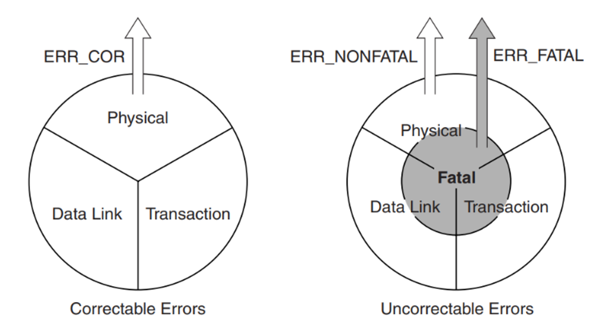
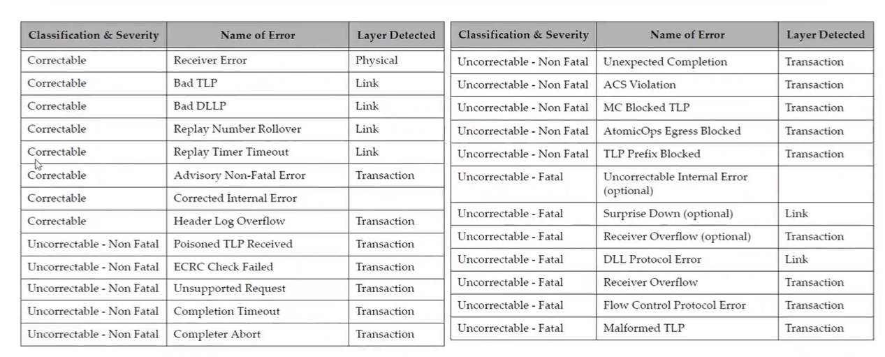
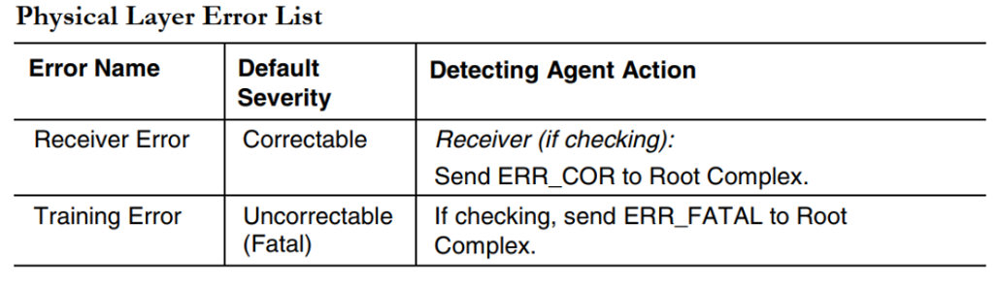
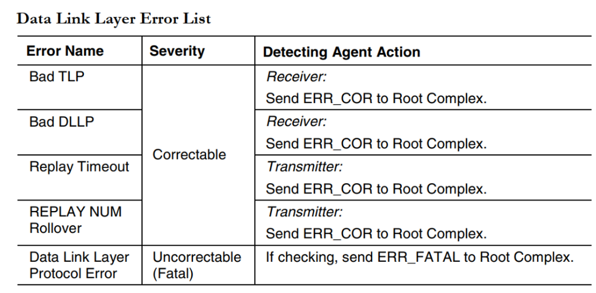
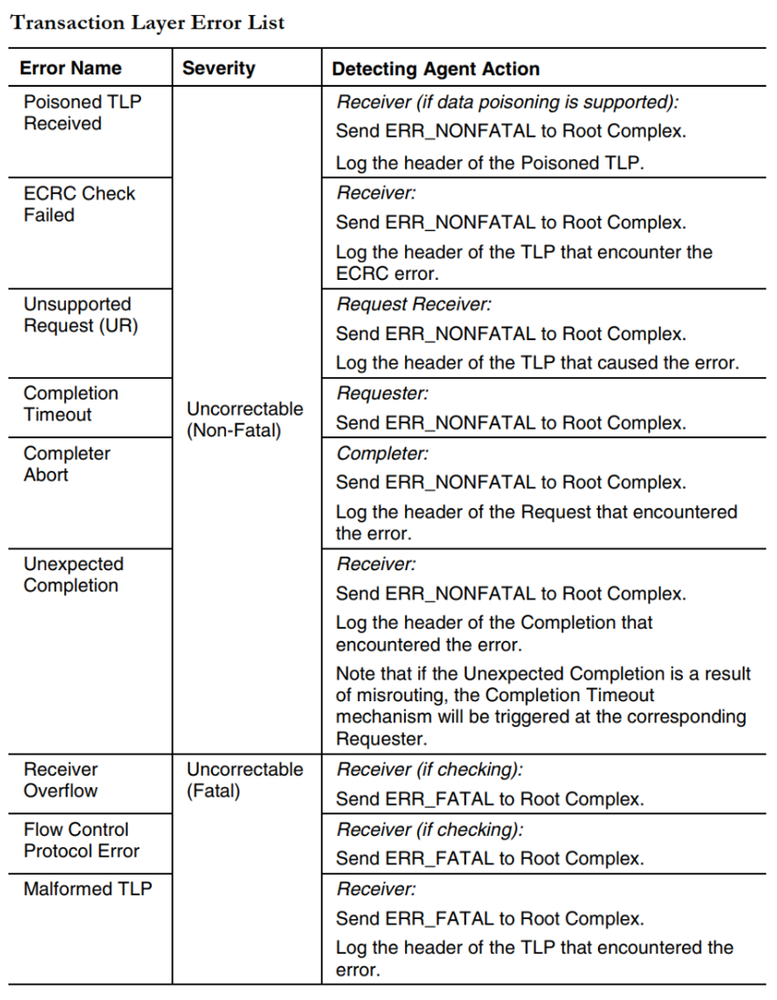
有些错误可能在某个平台上不是特别严重，因此可以给mask掉，不进行汇报。
错误上报方式
pcie 提供两种错误上报机制，一种是 Completion Status 另一种是 error Messages（in-band）。
Completion Status
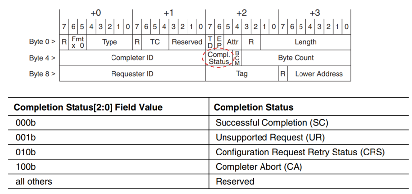
枚举时候访问不存在的设备，会返回UR。
Error Forwarding (data poisoning)
switch转发的时候，CRC校验失败，返回给请求者，说，下面返回的数据有问题，你要小心。
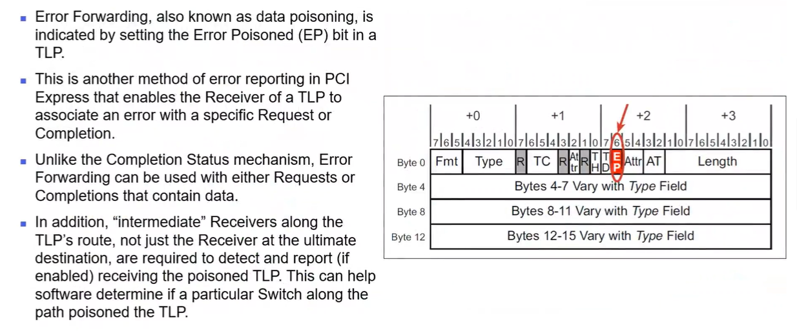
error Messages
error Messages 的包格式如下，可以看到 error Messages 是直接路由到 rp 的，需要 rp 去处理，其中 error message 中包含了 Requester ID 信息，rp 会将这个 Requester ID 保存起来，方便软件追踪问题。
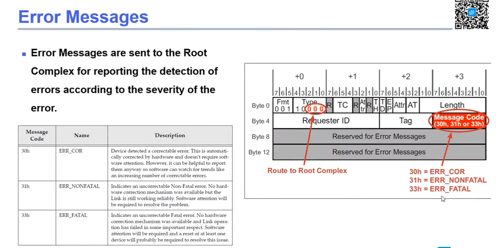
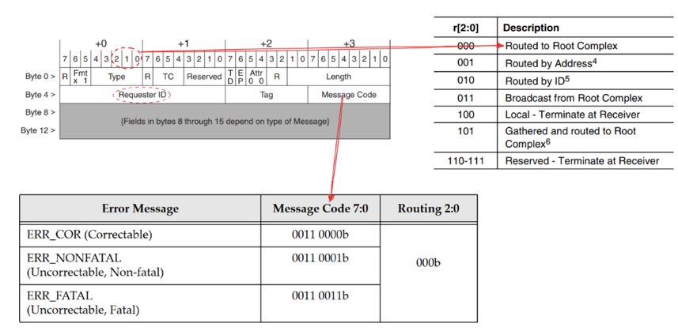
错误记录
Baseline
pcie 在处理错误时会尽量的将错误信息记录下来，方便软件处理的时候更容易找到错误的源头。对于不支持 aer 的 pcie 设备，只能通过 Device Status 状态寄存器来保存错误的信息，如下，只有一个简单的标志。
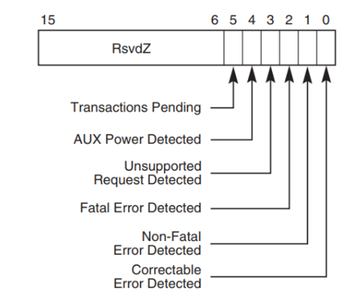
部分错误也会映射到 PCI status （软件上的向后兼容）寄存器中：
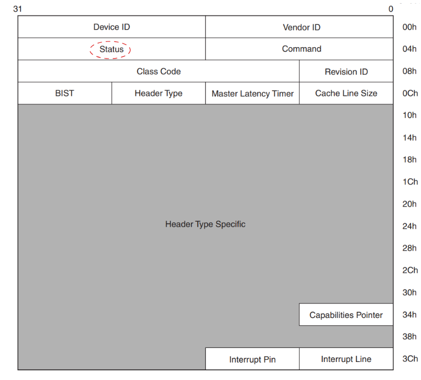
AER
扩展了错误记录能力。如下面这个CE Status寄存器。
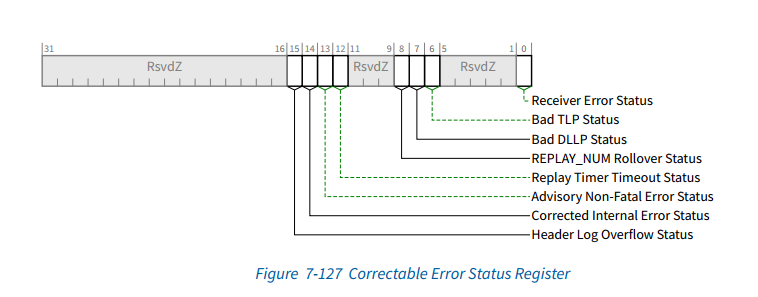
AER相关寄存器
UCE error status：指示当前发生了哪种错误；
UCE error mask：可以通过软件设置，哪种error不上报；
UCE error severity：是否将这个错误设置为fatal or non-fatal；
CE类似，只是没有severity
Advanced Error Capabilities and Control Register :
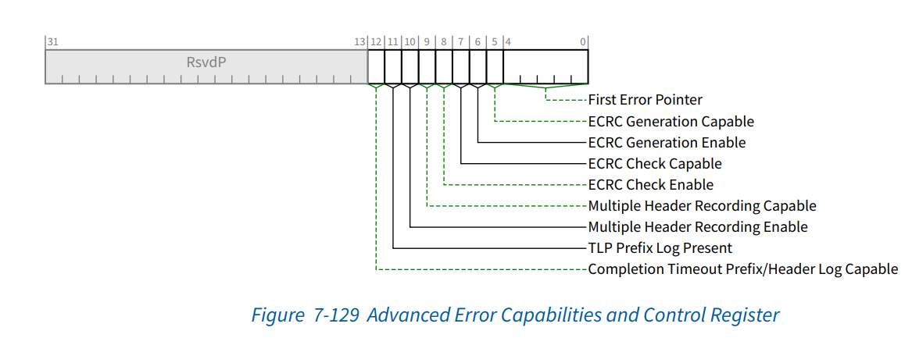
向RP发error message 以后，这期间可能还会发生错误，这里的first error pointer 会记录最初发生的错误。
Root Error Command Register (Offset 2Ch)
RP 收到error message 是否向CPU 发出中断
Root Error Status Register (Offset 30h)
MSI 地址，还有标识收到了多少个error message
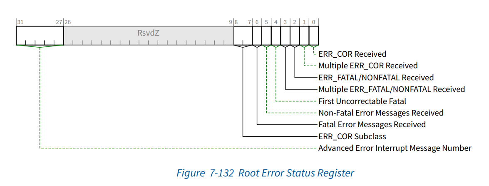
Header Log：保存发生错误的TLP header
Error Source Identification Register (Offset 34h)
记录最早收到error message的request ID。
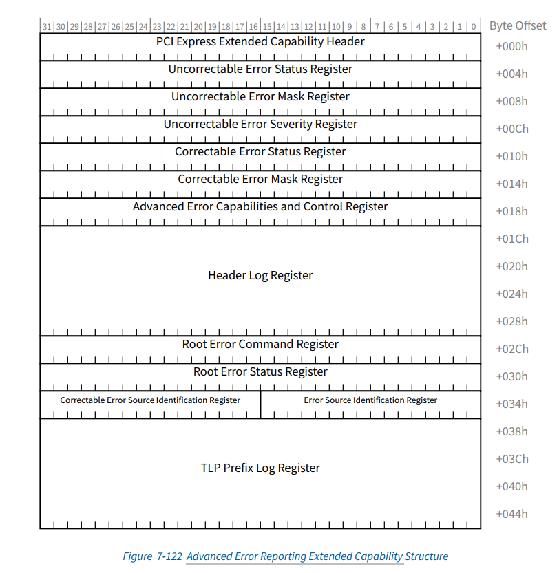
Device Control 寄存器中有一些 bit 是错误上报的总开关，要使能 aer 功能的话，也需要将这些配置打开。
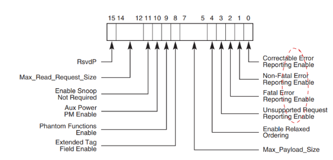
错误上报流程
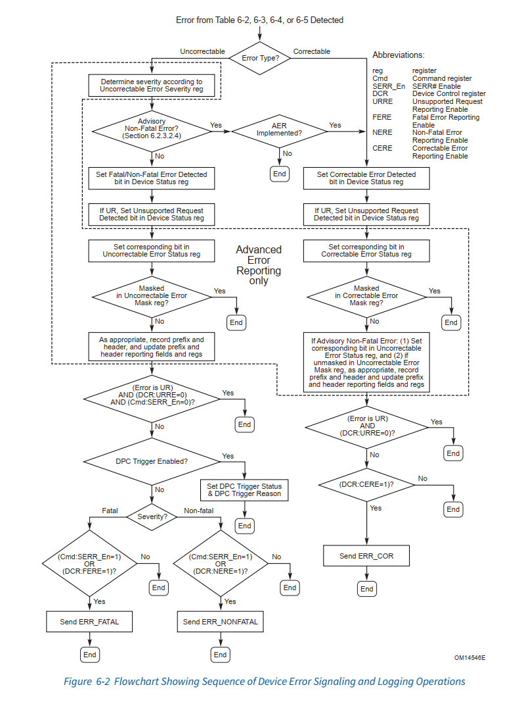
一个栗子
-
EP 收到了一个malformed tlp， 默认fatal错误；
-
EP将这个tlp header保存到Header logregister 中，将UCE status reg中的malformed tlp 置位；
-
向RP发送fatal error message；
-
rp 收到这个 error message 后，将 Root Error Status Register 中的 Fatal Error Messages Received 置位，并将这个 error message tlp 中的 requester id 记录到 Error Source Identification Register 中。
-
随后，rp 向 cpu 发出中断。
-
系统软件读取 rp 的 Roor Error Status 寄存器，获得当前发生的错误类型为 malformed tlp 错误，并且读取 Error Source Identification Register 得知发送这个 error message 的设备的 id 为 BDF=3.0.0 。
-
系统软件开始遍历整个 pcie hierarchy 查找这个 BDF=3.0.0 的设备，得到 pci_dev 结构体，并获取该设备的配置空间寄存器的信息 Uncorrectable Error Status Register 和 Header Log Register ，
将这些信息记录到 sys log 中（printk 才是 debug 的核心利器）。
-
默认情况下 malformed tlp 是一个 Fatal 错误，系统软件需要和该设备进行一系列协商之后，可能会选择对 ep0 进行 reset 。